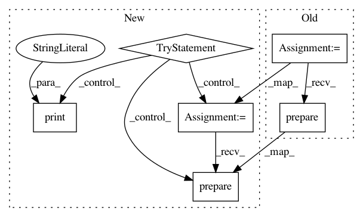

8d38791c1f43681314a5574ba68b1a21e3de0783,local/server/streamlet/local/Proxy.py,Proxy,_latest_handler,#Proxy#Any#,103
Before Change
self._n_inbound_connections += 1
// Establishe the websocket.
ws = web.WebSocketResponse()
await ws.prepare(request)
print("got a client websocket connection.")
After Change
// Indicate that we got this connection
self._n_inbound_connections += 1
try:
// Establishe the websocket.
ws = web.WebSocketResponse()
await ws.prepare(request)
print("got a client websocket connection.")
msg = await ws.receive()
if msg.type != WSMsgType.CLOSE:
print("Unknown message type:", msg.type)
print("The connection closed naturally.")
// with self._switchboard.stream_to(notebook_id) as add_deltas:
// async for delta_list in delta_list_iter(ws):
// add_deltas(delta_list)
return ws
// Close the server if there are no more connections.
finally:
self._n_inbound_connections -= 1
if self._n_inbound_connections < 1:
asyncio.get_event_loop().stop()
//
// async def _get_notebook_handler(self, request):
// // Parse out control information.
// notebook_id = request.match_info.get("notebook_id")
//
// // Establishe the websocket.
// ws = web.WebSocketResponse()
// await ws.prepare(request)
//
// async for delta_list in self._switchboard.stream_from(notebook_id):
// await ws.send_bytes(delta_list.SerializeToString())
//
// // with self._switchboard.stream_to(notebook_id) as add_deltas:
// // async for delta_list in delta_list_iter(ws):
// // print(f"Got a delta_list with {len(delta_list.deltas)} deltas.")
// // add_deltas(delta_list)
//
// print("Closing the connection.")
// return ws
def main():
Creates a proxy server and launches the browser to connect to it.
The proxy server will close when the browswer connection closes (or if
In pattern: SUPERPATTERN
Frequency: 4
Non-data size: 6
Instances
Project Name: streamlit/streamlit
Commit Name: 8d38791c1f43681314a5574ba68b1a21e3de0783
Time: 2018-03-10
Author: adrien.g.treuille@gmail.com
File Name: local/server/streamlet/local/Proxy.py
Class Name: Proxy
Method Name: _latest_handler
Project Name: streamlit/streamlit
Commit Name: 6beb01af7fd6463fceffa90f3646eda671688aac
Time: 2018-04-19
Author: adrien.g.treuille@gmail.com
File Name: local/server/streamlit/local/Proxy.py
Class Name: Proxy
Method Name: _client_ws_handler
Project Name: streamlit/streamlit
Commit Name: 8a167ddf959f848bf3b54d77a0b8c7aac2154564
Time: 2018-03-18
Author: adrien.g.treuille@gmail.com
File Name: local/server/streamlet/local/Proxy.py
Class Name: Proxy
Method Name: _latest_handler
Project Name: streamlit/streamlit
Commit Name: 6beb01af7fd6463fceffa90f3646eda671688aac
Time: 2018-04-19
Author: adrien.g.treuille@gmail.com
File Name: local/server/streamlit/local/Proxy.py
Class Name: Proxy
Method Name: _local_ws_handler